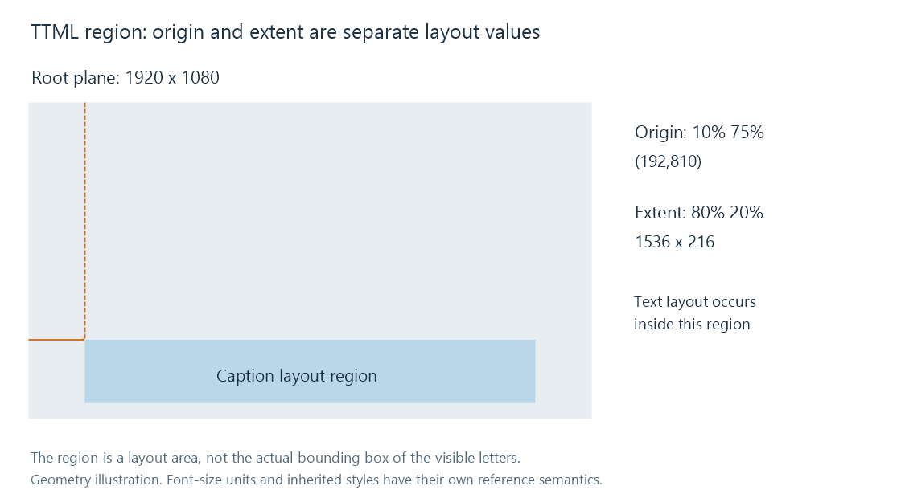

Timed Text Markup Language (TTML)
TTML uses XML to describe timed text, styles, regions, and the timing relationships of nested content.
TTML is an XML language for timed text and its presentation. A document can describe the words, their active intervals, named styles, layout regions and relationships between nested timed elements.
That structure makes TTML useful when a caption delivery system needs an explicit layout and timing model. It also means that finding a text element and reading its immediate timestamps is not always enough to determine the final caption.
One simple timed paragraph
<tt xmlns="http://www.w3.org/ns/ttml" xml:lang="en">
<body>
<div>
<p begin="12.5s" end="15s">The last train leaves at midnight.</p>
</div>
</body>
</tt>
The tt root identifies the TTML vocabulary through its XML namespace. In this simple document, the paragraph begins at 12.5 seconds and ends at 15. The XML language attribute declares English; it does not prove whether the wording is a translation or includes sound descriptions.
The namespace identifier is part of the syntax. A TTML document is not an ordinary HTML page whose elements can be styled or executed as arbitrary browser content.
Styles and regions have separate jobs
A style supplies properties such as colour, font size and alignment. A region describes a presentation area. Content can refer to both, and inherited or directly specified properties determine the resolved result.
Here is a complete small document with one region and one style:
<tt xmlns="http://www.w3.org/ns/ttml"
xmlns:tts="http://www.w3.org/ns/ttml#styling"
xml:lang="en">
<head>
<styling>
<style xml:id="caption" tts:color="white"
tts:fontSize="1c" tts:textAlign="center"/>
</styling>
<layout>
<region xml:id="lower" tts:origin="10% 75%"
tts:extent="80% 20%" tts:displayAlign="after"/>
</layout>
</head>
<body region="lower">
<div>
<p begin="12.5s" end="15s" style="caption">
The last train leaves at midnight.
</p>
</div>
</body>
</tt>
The region begins 10% across and 75% down its reference plane, with width 80% and height 20%. For a 1920 × 1080 root plane, those region coordinates are:
| Region property | Calculation | Result |
|---|---|---|
| Left origin | 0.10 × 1920 | 192 |
| Top origin | 0.75 × 1080 | 810 |
| Width | 0.80 × 1920 | 1,536 |
| Height | 0.20 × 1080 | 216 |

The region is a box for layout, not the bounding rectangle of the ink. textAlign="center" aligns text within its line area; displayAlign="after" aligns the content toward the after edge of the region's block progression. In this horizontal example, that means toward the bottom.
The font size 1c uses a cell-based unit from the document's cell grid. Font-size percentages would instead use their applicable inherited-font or cell reference. The table calculates region coordinates; other properties have their own reference semantics.
The renderer next resolves font metrics, line breaks, direction and padding to place the actual glyphs. A 1,536-pixel-wide region does not imply that the sentence fills all 1,536 pixels.
Nested timing changes the reference point
Consider this body fragment under the default parallel time-container semantics:
<body>
<div begin="10s" end="20s">
<p begin="2s" end="5s">The platform is empty.</p>
</div>
</body>
The paragraph's interval is relative to its enclosing time container. It therefore occupies movie time 12 through 15 seconds, not 2 through 5 seconds.
The parent's active interval also limits its descendants. If the parent's end becomes 14s, the paragraph's nominal interval still runs to 15, but the parent ends first. The effective active interval is 12 through 14.
This matters when flattening a document into simple cues: timing must be resolved through the ancestor chain. Copying every paragraph's literal begin and end into SRT would put this line in the wrong scene.
A sequential time container has different reference rules for its children. A converter has to honor that declared timing model too, rather than treating every child as an independent absolute cue.
Frame and tick expressions need their parameters
TTML can express time in seconds, frames or ticks under its timing model. The document parameters establish the rate used to interpret frame or tick counts.
For example, a nominal frame rate of 30 and multiplier 1000/1001 give an effective rate of 30000/1001 frames per second. An offset of 30,000 frames then represents 1,001 seconds, not 1,000.
effective rate = 30 × 1000 / 1001
time = 30,000 / (30,000 / 1001) = 1,001 s
The frame portion of a clock expression is also distinct from decimal milliseconds. A value's syntax, time base and parameters together determine its interpretation.
The extension .ttml or .xml therefore cannot tell a reader all timing semantics. Container or streaming packaging can additionally locate the document on the programme timeline.
A profile defines a usable subset
TTML has a broad vocabulary. A delivery system usually needs an agreed profile that constrains which features an author uses and what a consumer processes. IMSC is one such profile family for internet media captions and subtitles.
“Supports TTML” can mean support for a particular profile and feature set. It is not evidence that every styling, image, timing or animation feature in TTML2 will appear identically.
For an Emby route converting timed text into a representation the selected app accepts, useful preservation questions concern resolved cue times, language, content, regions and styling. Keeping the words is an important part of conversion; keeping the presentation additionally requires representing their resolved layout and timing.
The simple and styled documents above use the same 12.5–15-second sentence. One delegates most appearance choices to the renderer; the other supplies a named region and style. Their matching words and interval do not make them the same presentation description.